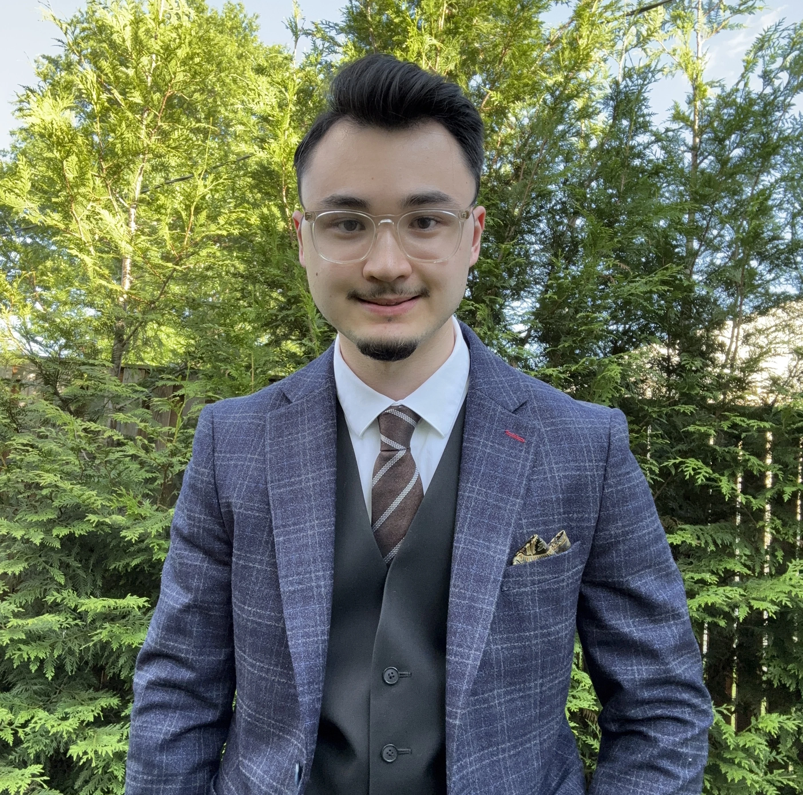
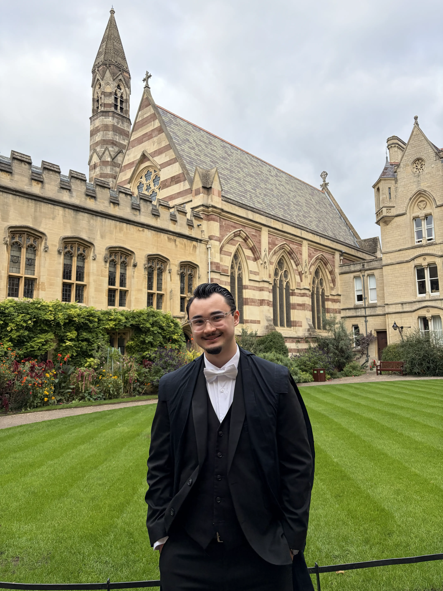
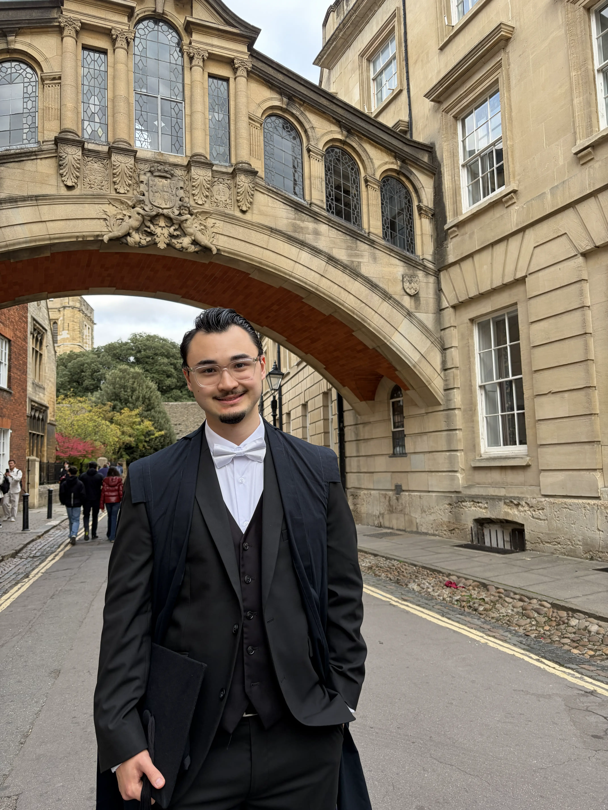
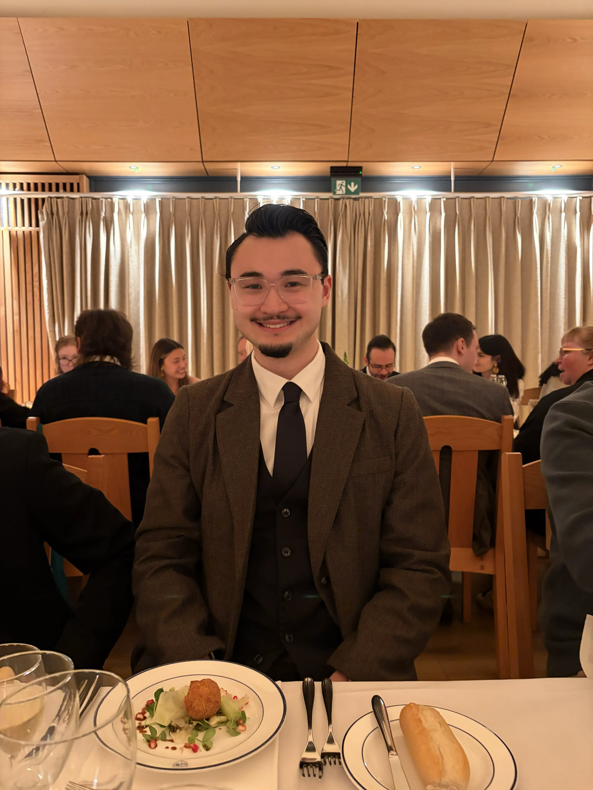
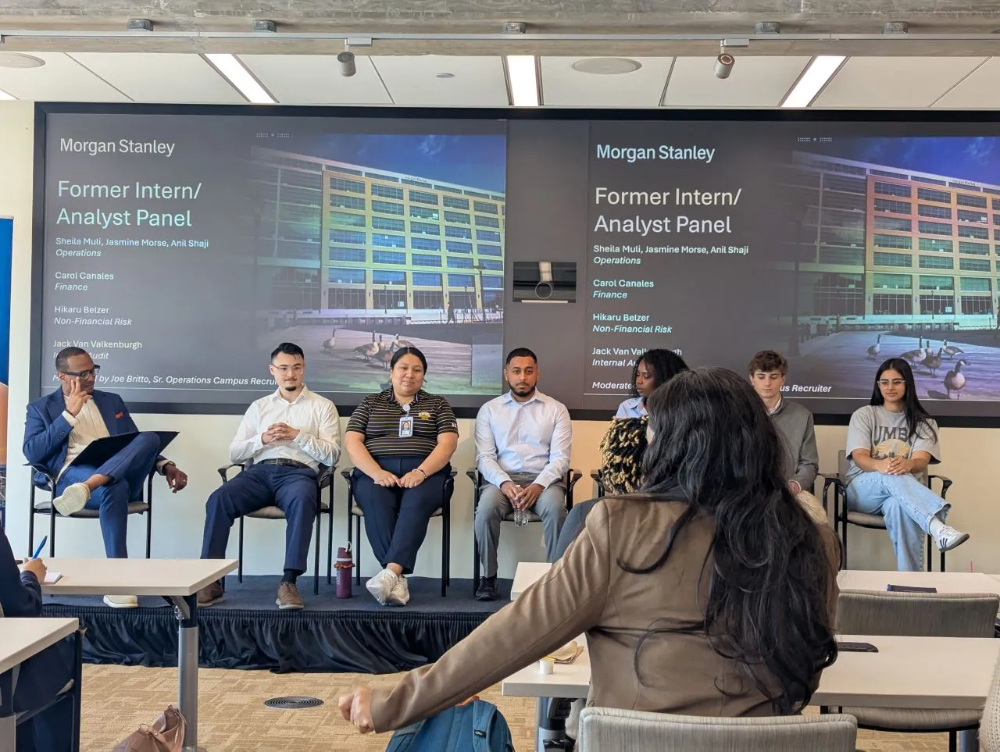
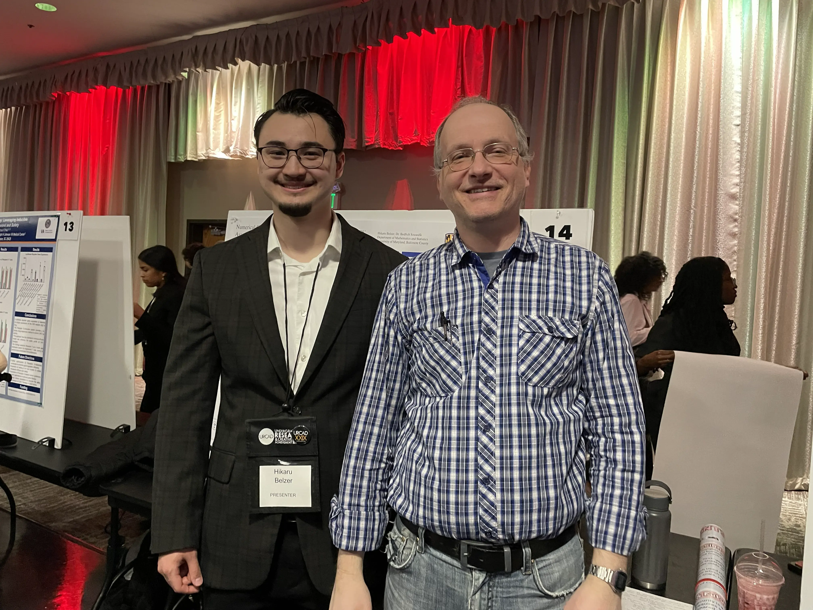
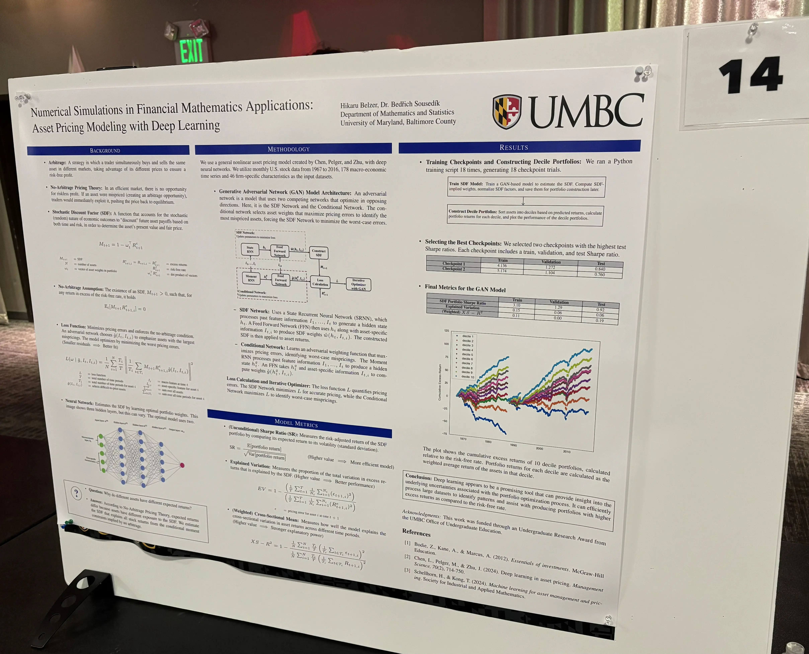
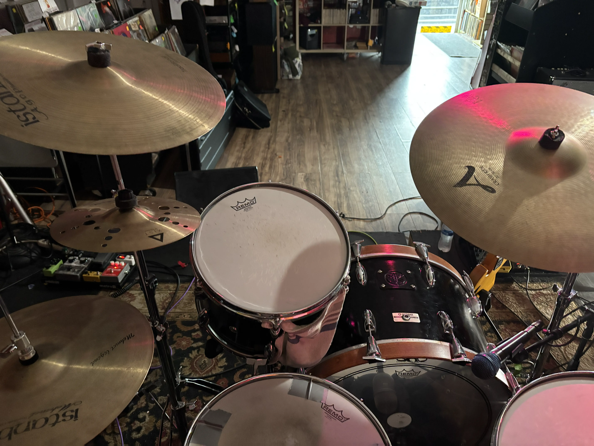
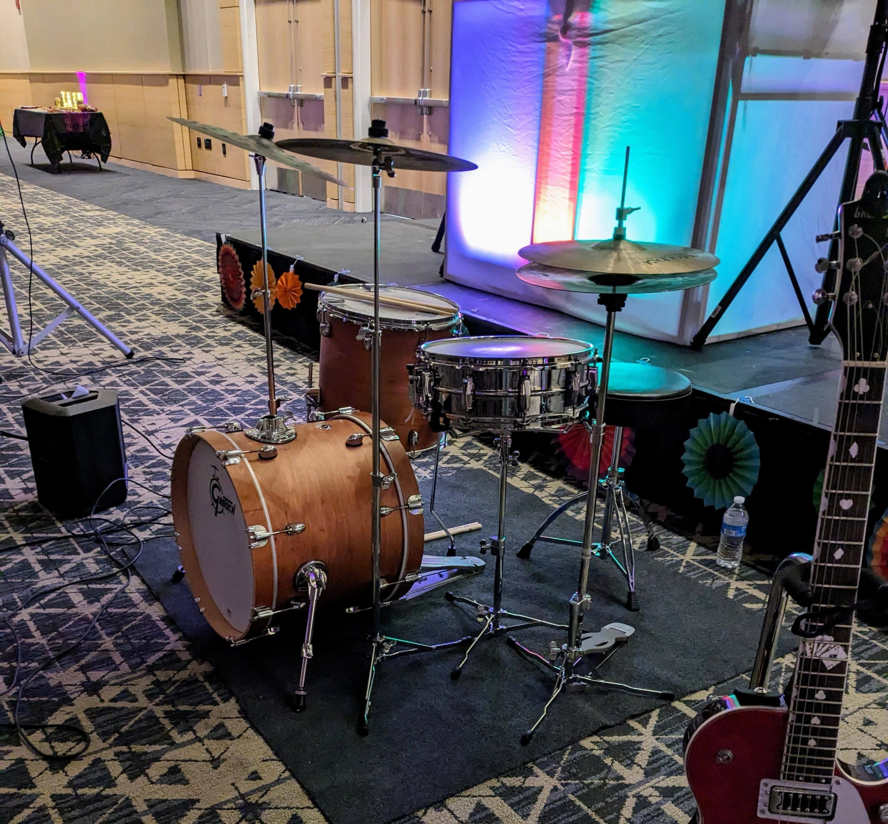

University of Oxford – Mathematical Institute
MSc, Mathematical Sciences
- Current Course Topics: Numerical Linear Algebra, Deep Learning Theory, Combinatorics, Additive Number Theory
Master's-Level Mathematician
I'm currently pursuing the MSc in Mathematical Sciences at the University of Oxford.
View Résumé
I grew up in the Baltimore suburbs, where I attended Baltimore County Public Schools and received formal training in music, taking private lessons with jazz bassist Tom Baldwin. During high school, I began self-teaching calculus, which motivated me to pursue the BA in Mathematics at the University of Maryland, Baltimore County (UMBC).
During my time at the university, I was mentored by Dr. Bedřich Sousedík, who supervised my senior thesis, Numerical Simulations in Financial Mathematics Applications. I extended my training into high-performance computing and statistics, running my programs on the UMBC High Performance Computing Facility, serving as a Computer Science TA, and completing a minor in statistics. Alongside my studies, I was a Summer Analyst at Morgan Stanley, where I optimized the firm's global scenario analysis program and was recognized by the Global Head of Operational Risk.
I graduated from UMBC in three years with a 4.0 GPA (summa cum laude). Following graduation, I joined Morgan Stanley full-time as an Analyst while studying part-time and remotely at the University of Edinburgh. At this university, I completed Postgraduate Professional Development in High Performance Computing, where I had the opportunity to run programs on ARCHER2, the UK's national supercomputer.
MSc, Mathematical Sciences
Postgraduate Professional Development, High Performance Computing (HPC)
BA, Mathematics | Minor, Statistics
Analyst, Data Governance & AI Risk
Summer Analyst, Non-Financial Risk







